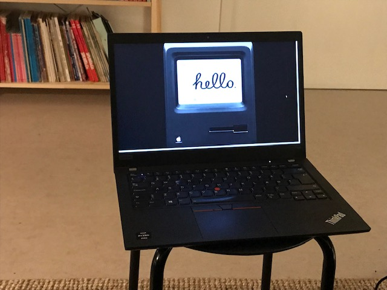

Min computer
Hvilken computer har jeg?
Min personlige computer er en bærbar Lenovo Thinkpad T491 der or produceret af Microsoft
Windows 11 er det styresystem som jeg benytter
Det er muligt for mig at se flere folders i tabs uden at være nødt til at åbne et nyt vindue. Systemet på min computer har også et let tilgængeligt optagnings og klippeværktøj. Det er også muligt at forbinde min computer til min telefon, hvis det skulle ønskes.